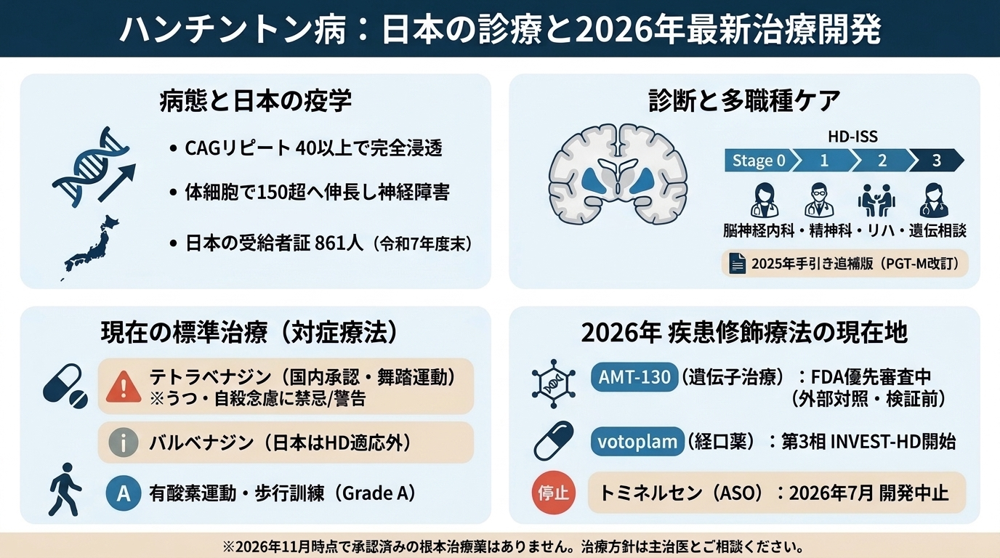

ハンチントン病：日本の診療と2026年最新治療開発｜インフォグラフィック（原寸拡大）
画像をタップすると原寸のPNG画像が開きます。2026年11月19日時点の一次資料に基づく要約です。2026年11月時点で承認済みの疾患修飾療法（根本治療薬）はありません。個別の治療方針は担当医とご相談ください。
全体要約：ハンチントン病の日本の診療と2026年最新治療開発

画像をタップすると原寸のPNG画像が開きます。2026年11月19日時点の一次資料に基づく要約です。2026年11月時点で承認済みの疾患修飾療法（根本治療薬）はありません。個別の治療方針は担当医とご相談ください。
